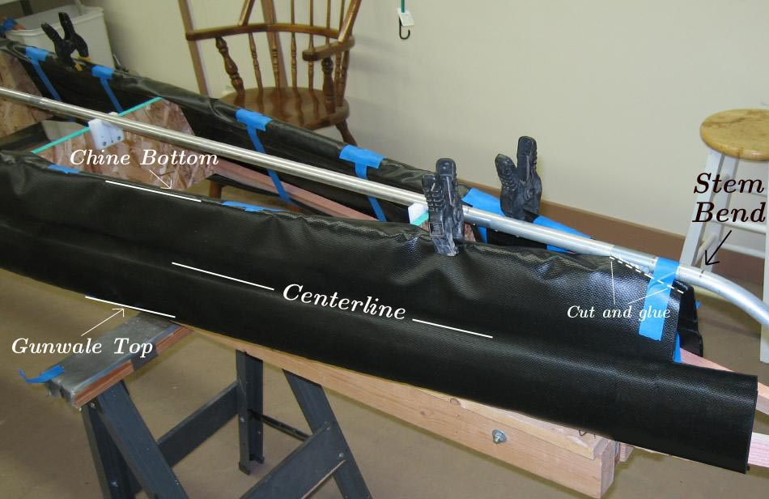

| Sonnet ( Sleeves) | Menu Previous Page Next Page |
|

Attach the sleeves to the sides of the skinning frame, using clamps initially to correctly position the sleeves. The centerline of the sleeves should be centered between the chines and gunwales, and the ends of the sleeves should be positioned at the point where the keel bends to form the stems ( bow and stern). Pull and fold the excess sleeve material over the chines and gunwales and tape in place awaiting gluing to the inside of the PVC hull skin. Trim the sleeve ends where they extend past the keel and glue a narrow area to close this trimmed section. Remove the clamps before gluing the sleeves to the hull.
Note: The area to be glued extends from the chine outer edge to the gunwale outer edge ( marked in white on pic above) and along the entire length of the sleeve. The sleeve area that folds over the gunwales and chines is not glued. |
|